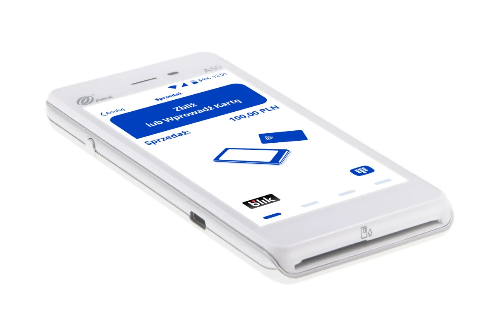
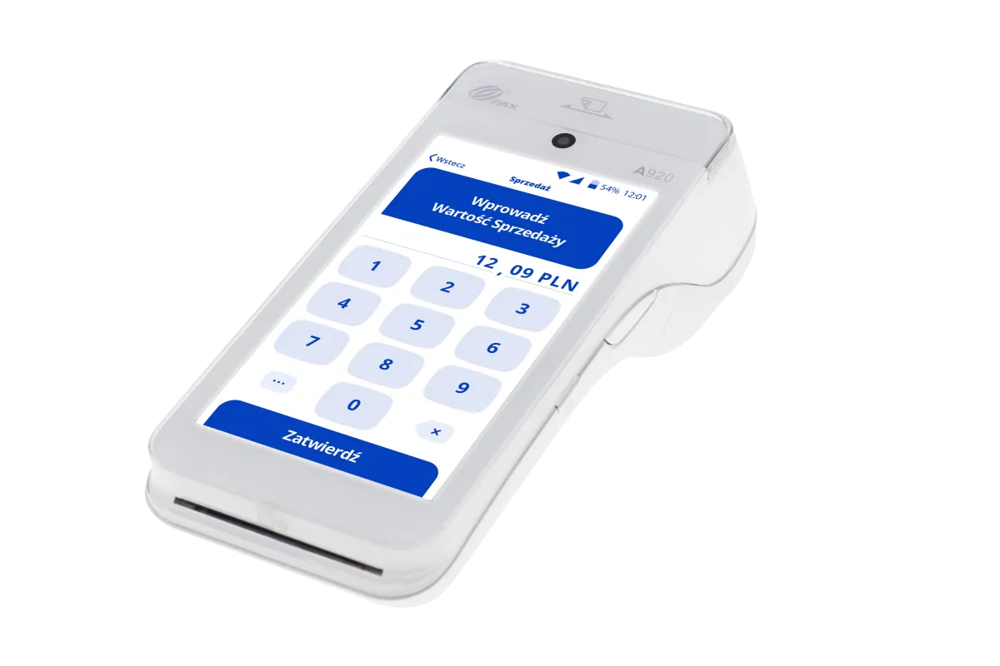
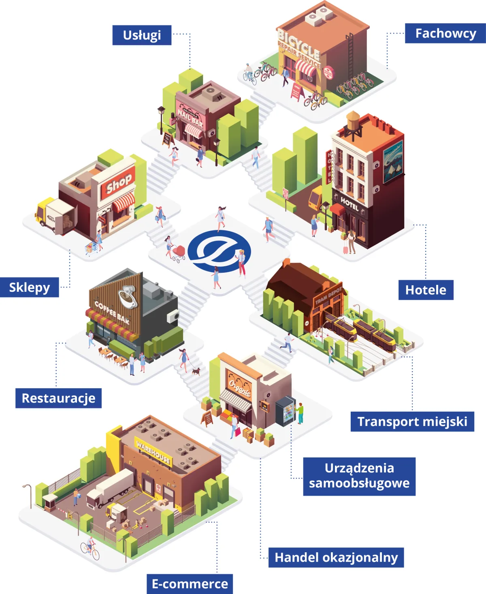

Terminal płatniczy - ile kosztuje, kto musi go mieć i jak go uruchomić
Prowadzisz firmę i zastanawiasz się nad terminalem płatniczym? Znajdziesz tu konkretne koszty, aktualny stan prawny i podpowiedź, jakie urządzenie sprawdzi się w Twoim punkcie. Jestem doradcą eService - jeśli po lekturze zostaną pytania, policzę wszystko pod Twój obrót, zanim cokolwiek podpiszesz.
Krzysztof Szczepaniak · doradca płatności eService · 15+ lat doświadczenia


W skrócie
Terminal płatniczy w pigułce
- Czym jest
- Terminal płatniczy to urządzenie, które przyjmuje w punkcie sprzedaży płatności kartą, telefonem, zegarkiem i BLIKIEM, a następnie przekazuje transakcję do rozliczenia i pieniądze na konto firmy.
- Kto musi go mieć
- Od 1 stycznia 2022 r. przedsiębiorca prowadzący sprzedaż na kasie fiskalnej musi umożliwić klientowi płatność bezgotówkową (art. 19a Prawa przedsiębiorców). Przepis nie nakazuje terminala - dopuszcza też BLIK czy aplikację - ale terminal jest najprostszym sposobem, żeby ten obowiązek spełnić.
- Czy trzeba integrować terminal z kasą online
- Nie. Obowiązek integracji został uchylony nowelizacją opublikowaną 24 lutego 2025 r., która weszła w życie 1 kwietnia 2025 r. Zapowiadana kara 5000 zł nigdy nie zaczęła obowiązywać.
- Ile kosztuje
- W Programie Polska Bezgotówkowa terminal płatniczy kosztuje 0 zł przez pierwsze 12 miesięcy, a prowizja wynosi 0% do 100 000 zł obrotu. W ofercie eService kolejne 18 miesięcy to 1 zł miesięcznie.
- Co po okresie promocyjnym
- Głównym kosztem zostaje udział od transakcji - standardowa marża to ok. 0,5%, może dojść dodatkowa marża zwiększająca koszt. Dokładną stawkę liczy się pod obrót konkretnej firmy.
Ostatnia aktualizacja: 12 sierpnia 2026 · Stan prawny: lipiec 2026.
Czym jest terminal płatniczy (POS) i jak działa
Terminal płatniczy (nazywany też terminalem POS, od point of sale, albo czytnikiem kart płatniczych) to urządzenie elektroniczne, które pośredniczy między klientem, jego bankiem a Twoją firmą. Odczytuje dane z karty lub telefonu, wysyła je do autoryzacji i - po jej potwierdzeniu - uruchamia rozliczenie transakcji.
Współczesny terminal obsługuje nie tylko karty. Przyjmuje płatności zbliżeniowe telefonem i zegarkiem (Apple Pay, Google Pay) oraz BLIK, czyli wszystkie formy, z których klienci korzystają na co dzień.
Terminal kart płatniczych a czytnik kart - czy to to samo?
W praktyce tak. „Terminal kart płatniczych", „czytnik kart płatniczych" i „terminal POS" to potoczne nazwy tego samego urządzenia. Czytnikiem bywa też nazywana sama część odczytująca kartę - na przykład PIN Pad podłączony do kasy - ale w rozmowie o ofercie chodzi zwykle o kompletny terminal.
Jak przebiega płatność - od klienta przez bank do Twojego konta
-
1
Wpisujesz kwotę na terminalu albo pobiera ją automatycznie z kasy fiskalnej.
-
2
Klient zbliża kartę, telefon lub zegarek do czytnika albo wpisuje kod BLIK.
-
3
Terminal odczytuje dane transakcji, szyfruje je i wysyła do agenta rozliczeniowego.
-
4
Agent kieruje zapytanie przez organizację kartową (Visa, Mastercard) do banku klienta.
-
5
Bank sprawdza, czy na koncie są środki, i autoryzuje płatność albo ją odrzuca.
-
6
Terminal wyświetla potwierdzenie, a przy kwotach powyżej limitu zbliżeniowego prosi o PIN.
-
7
Agent rozliczeniowy przekazuje środki na konto firmy w terminie wskazanym w umowie.
Cała ta sekwencja trwa kilka sekund. Z perspektywy obsługi to jedno dotknięcie ekranu - reszta dzieje się po stronie infrastruktury płatniczej.
Rodzaje terminali płatniczych - jak wybrać terminal płatniczy do firmy
Wybór urządzenia zależy od tego, gdzie i jak przyjmujesz płatności. W praktyce sprowadza się to do trzech wariantów.
Terminal stacjonarny
Stoi przy kasie i łączy się przez Wi-Fi. Sprawdza się tam, gdzie klient płaci zawsze w tym samym miejscu - w sklepie, recepcji czy punkcie usługowym.
Przenośny terminal płatniczy (mobilny)
Działa na baterii i karcie SIM, więc płatność przyjmiesz przy stoliku, w terenie albo u klienta. Wybór dla gastronomii, usług mobilnych i sprzedaży poza lokalem.
Terminal płatniczy w telefonie
Aplikacja eService tom zamienia telefon lub tablet w terminal - bez dodatkowego urządzenia. Na iPhonie działa Tap to Pay, czyli przyjmowanie płatności zbliżeniowo samym telefonem.
PAX A50
Kompaktowe urządzenie bez drukarki. Proponuję je zarówno stacjonarnie, jak i mobilnie - wszędzie tam, gdzie paragon i tak drukuje kasa fiskalna.
PAX A920
Mobilny terminal z Androidem, dużym ekranem i drukarką paragonów. Kartę SIM dostajesz od eService, możesz też użyć własnej.
W aplikacji eService tom płatności powyżej 100 zł potwierdza się PIN-em wprowadzanym na ekranie telefonu. To rozwiązanie dla firm, które przyjmują płatności rzadko albo w wielu miejscach naraz - na przykład w pracy makijażystki na ślubach i sesjach, gdzie nie ma stałego lokalu.
Ile kosztuje terminal płatniczy - opłaty i prowizje
Na koszt terminala płatniczego składają się dwie rzeczy: dzierżawa urządzenia i prowizja od transakcji. Dzierżawa to kwota stała, druga pozycja rośnie razem z obrotem - dlatego dwie firmy z tym samym terminalem mogą płacić zupełnie inne miesięczne kwoty.
| Pozycja | W Programie Polska Bezgotówkowa | Standardowo |
|---|---|---|
| Terminal (dzierżawa), pierwszy rok | 0 zł | wg wybranego pakietu - policzę pod firmę |
| Dzierżawa, miesiące 13.-30. | 1 zł/msc (oferta eService) | wg pakietu |
| Prowizja, pierwsze 12 miesięcy | 0% - do 100 000 zł obrotu | ok. 0,5%, do negocjacji |
| Po okresie promocyjnym | ok. 0,5%, do negocjacji | ok. 0,5%, do negocjacji |
| Umowa | bezterminowa - bez wiązania na lata | do uzgodnienia |
Stan na lipiec 2026 r. To warunki programowe - dokładną stawkę policzę pod obrót Twojej firmy, zanim cokolwiek podpiszesz.
Kto łapie się na 0 zł
Do Programu kwalifikuje się firma, która nie przyjmowała płatności kartą przez ostatnie 12 miesięcy albo dopiero zaczyna, ma maksymalnie 5 lokalizacji i nie działa we franczyzie. Kwalifikację sprawdzę za Ciebie.
Kto musi mieć terminal płatniczy
Sam terminal płatniczy nie jest obowiązkowy. Obowiązkowe jest umożliwienie klientowi zapłaty bezgotówkowo - i dotyczy to firm, które ewidencjonują sprzedaż na kasie fiskalnej. Podstawą jest art. 19a Prawa przedsiębiorców, obowiązujący od 1 stycznia 2022 r.
Przepis nie wskazuje konkretnego urządzenia. Obowiązek spełnia terminal, ale też BLIK czy aplikacja przyjmująca przelewy. Terminal jest najwygodniejszy, bo obsługuje wszystkie te formy naraz.
Kto musi
Firmy z kasą fiskalną - handel detaliczny, gastronomia, usługi dla klientów indywidualnych.
Kto nie musi
Firmy działające wyłącznie w modelu B2B, bez takiej ewidencji. Dla nich terminal to kwestia wygody i dostępności dla klientów, nie obowiązku.
W części usług obowiązek pojawia się od pierwszego dnia. Usługi fryzjerskie i kosmetyczne wymagają kasy fiskalnej online od pierwszej sprzedaży - nie obejmuje ich zwolnienie do 20 000 zł obrotu - więc pytanie o płatność bezgotówkową wraca od razu po otwarciu. Rozpisałem to osobno dla salonu fryzjerskiego i gabinetu kosmetycznego.
Czego już nie ma
Planowany obowiązek integracji terminala z kasą fiskalną online został uchylony - nowelizacja opublikowana 24 lutego 2025 r. weszła w życie 1 kwietnia 2025 r. Kara 5000 zł, o której pisano przy okazji Polskiego Ładu, nigdy nie zaczęła obowiązywać. Jeśli trafiłeś na starszy artykuł, który o niej wspomina, to informacja nieaktualna.
Dlaczego warto mieć terminal płatniczy
Nawet tam, gdzie obowiązek nie sięga, posiadanie terminala płatniczego zwykle się broni - bo klienci po prostu przestali nosić gotówkę. W 2024 r. 69% transakcji w Polsce odbyło się bezgotówkowo (Fundacja Polska Bezgotówkowa), a 97,7% kart to karty zbliżeniowe (NBP, czerwiec 2025).
Nie tracisz sprzedaży
Klient bez gotówki i bez możliwości zapłaty kartą zwykle nie wraca do bankomatu - rezygnuje z zakupu.
Mniej gotówki w kasie
Mniej liczenia, mniej wpłat w oddziale i mniejsze ryzyko pomyłki przy wydawaniu reszty.
Czytelne rozliczenia
Każda transakcja jest udokumentowana, a obrót bezgotówkowy łatwiej zestawić z ewidencją sprzedaży.
Terminal za 0 zł
Darmowy terminal płatniczy w Programie Polska Bezgotówkowa
To wsparcie obrotu bezgotówkowego prowadzone przez Fundację Polska Bezgotówkowa, powołaną m.in. przez Związek Banków Polskich i agentów rozliczeniowych. Firma, która przystępuje do programu, przez pierwsze 12 miesięcy nie płaci za dzierżawę terminala ani za obsługę transakcji - do 100 000 zł obrotu.
Warunki przystąpienia
- Brak płatności kartą w firmie przez ostatnie 12 miesięcy albo start działalności.
- Maksymalnie 5 lokalizacji.
- Działalność poza franczyzą.
Co po 12 miesiącach
Zwolnienie z opłat kończy się po roku lub wcześniej - w momencie osiągnięcia 100 000 zł obrotu bezgotówkowego. Później w ofercie eService kolejne 18 miesięcy dzierżawy to 1 zł miesięcznie. To moment, w którym warto policzyć konkretne kwoty pod obrót firmy.
Skąd wziąć terminal płatniczy
Umowa dotyczy obsługi płatności, nie samego urządzenia
Terminal płatniczy udostępnia agent rozliczeniowy - firma, która rozlicza transakcje kartowe i przekazuje pieniądze na konto. Urządzenie jest zwykle dzierżawione w ramach tej umowy, dlatego przy wyborze liczy się nie cena sprzętu, lecz cztery inne rzeczy.
Stawka od transakcji
To główny koszt w dłuższym okresie, ważniejszy niż cena urządzenia. Stawki ustala się indywidualnie: Visa, Mastercard, Maestro, BLIK (od 0,39%), AmEx, JCB, UnionPay i karty flotowe.
Okres związania umową
Warto sprawdzić, czy jest termin minimalny i co dzieje się po jego upływie. W ofercie eService umowa jest bezterminowa - bez sztywnego wiązania na lata.
Zakres wsparcia
Kto odbiera telefon, gdy terminal przestaje działać w sobotę po południu. eService należy do Grupy PKO Banku Polskiego i Global Payments, a wsparcie techniczne działa 24/7.
Pozostałe kanały sprzedaży
Bramka płatnicza do sklepu internetowego, aplikacja eService tom w telefonie oraz jeden operator dla wielu lokalizacji - spójne rozliczenia i jedno miejsce kontaktu.
Terminal płatniczy na własność czy dzierżawa
Urządzenie można kupić na własność, ale w praktyce rzadko się to opłaca. Własny terminal i tak wymaga umowy z agentem rozliczeniowym, a do tego dochodzi serwis, aktualizacje i wymiana sprzętu po latach. W modelu dzierżawy te rzeczy są po stronie operatora - a w Programie Polska Bezgotówkowa przez pierwszy rok nie płacisz za nią nic.
Prowadzę sprawę od pierwszej rozmowy - przez zgłoszenie i konfigurację - po pierwszą płatność w Twoim punkcie. Jeśli masz już terminal u innego dostawcy, mogę przejrzeć umowę i powiedzieć wprost, czy zmiana ma sens.
Branże
Jak przyjmować płatności - w punkcie, w sieci i w terenie
Gastronomia, handel detaliczny, usługi, transport, rolnictwo i wiele innych modeli. Ten sam operator obsługuje wpłaty w lokalu, w e-sklepie i z telefonu - spójne doświadczenie klienta i pełniejsza kontrola nad danymi obrotu.
Na terminalu dostępne są też cashback, płatność w walucie karty (DCC) i doładowania, a urządzenie można zintegrować z systemem kasowym i PIN Padem.
Szczególnie blisko znam realia branży beauty - salonów, barbershopów, gabinetów i studiów makijażu. Dla nich prowadzę osobne strony z rozpisanymi kosztami i przepisami.
Zapytaj o ofertę dla swojej branży
Branża beauty
Terminal w salonie, barbershopie i gabinecie
Beauty ma swoją specyfikę: kasa fiskalna online od pierwszej sprzedaży, praca na fotelu albo w terenie, zaliczki i pakiety zabiegów. Dla każdego z tych zawodów rozpisałem koszty, przepisy i dobór urządzenia osobno - z liczbami, nie ogólnikami.
Salon fryzjerski
Płatność przy fotelu, integracja z kasą online, napiwki. Kasa fiskalna wymagana od pierwszej sprzedaży.
terminal płatniczy dla fryzjeraBarbershop
Szybka obsługa bez rezerwacji, karnety i płatności zbliżeniowe telefonem przy stanowisku.
terminal płatniczy dla barberaGabinet kosmetyczny
Zabiegi pakietowe, zaliczki i przedpłaty, dane klientek. Kasa online od pierwszej sprzedaży.
terminal płatniczy dla kosmetyczkiStudio makijażu
Praca w terenie - śluby, sesje, dojazd do klientki. Terminal mobilny albo telefon jako terminal.
terminal płatniczy dla makijażystkiDopiero otwierasz salon albo gabinet?
Zebrałem w jednym pliku PDF pięć kroków startu: działalność, kasa fiskalna, terminal, sanepid i RODO.
FAQ
Najczęstsze pytania o terminal płatniczy
Ile kosztuje terminal płatniczy?
W Programie Polska Bezgotówkowa terminal płatniczy kosztuje 0 zł przez pierwsze 12 miesięcy, a prowizja wynosi 0% do 100 000 zł obrotu. W ofercie eService kolejne 18 miesięcy to 1 zł miesięcznie. Po okresie promocyjnym głównym kosztem jest udział od transakcji - standardowa marża to ok. 0,5%, może dojść dodatkowa marża zwiększająca koszt.
Jaki jest miesięczny koszt utrzymania terminala płatniczego?
Na miesięczne utrzymanie składają się dzierżawa urządzenia i udział od transakcji. Przez pierwszy rok w Programie jest to 0 zł. Później kwota zależy od obrotu firmy - policzę ją konkretnie przed podpisaniem umowy.
Kto musi mieć terminal płatniczy?
Obowiązek dotyczy firm prowadzących sprzedaż na kasie fiskalnej - od 1 stycznia 2022 r. muszą umożliwić klientowi płatność bezgotówkową (art. 19a Prawa przedsiębiorców). Przepis dopuszcza terminal, BLIK lub aplikację. Działalność wyłącznie B2B, bez takiej ewidencji, obowiązku nie ma.
Czy terminal płatniczy trzeba integrować z kasą fiskalną?
Nie. Obowiązek integracji terminala z kasą fiskalną online został uchylony nowelizacją opublikowaną 24 lutego 2025 r., która weszła w życie 1 kwietnia 2025 r. Kara 5000 zł nigdy nie zaczęła obowiązywać. Integracja pozostaje możliwa, jeśli jest wygodna - ale nie jest wymagana.
Czy osoba prywatna może mieć terminal płatniczy?
Umowa o terminal płatniczy zawierana jest z przedsiębiorcą, więc do jej podpisania potrzebna jest zarejestrowana działalność. Jeśli dopiero planujesz firmę, rozmowę możemy zacząć wcześniej - podpowiem, co i w jakiej kolejności załatwić.
Skąd wziąć terminal płatniczy?
Terminal płatniczy udostępnia agent rozliczeniowy - firma, która rozlicza transakcje kartowe i przekazuje pieniądze na konto. Urządzenie jest zwykle dzierżawione w ramach umowy o obsługę płatności, dlatego przy wyborze liczy się nie cena sprzętu, lecz stawka od transakcji, okres związania umową i zakres wsparcia.
Czy można kupić terminal płatniczy na własność?
Tak, terminal można kupić na własność, ale umowa z agentem rozliczeniowym i tak jest potrzebna - to on rozlicza transakcje. Przy zakupie dochodzą serwis, aktualizacje i wymiana sprzętu po latach, dlatego w większości firm dzierżawa wychodzi taniej. W Programie Polska Bezgotówkowa dzierżawa przez pierwsze 12 miesięcy kosztuje 0 zł.
Jak długo trwa uruchomienie terminala płatniczego?
Po zgłoszeniu i podpisaniu umowy urządzenie trafia do firmy i wymaga krótkiej konfiguracji. Przeprowadzam przez to krok po kroku - nie musisz znać się na płatnościach.
Czy mogę zmienić dostawcę terminala, który już mam?
Tak. Warto zacząć od sprawdzenia obecnej umowy: okresu wypowiedzenia i warunków zakończenia. Mogę ją przejrzeć i powiedzieć, czy zmiana się opłaca - również wtedy, gdy wyjdzie, że lepiej zostać przy obecnym rozwiązaniu.
Porozmawiajmy o terminalu dla Twojej firmy
Podaj kontakt - sprawdzę udział w Programie Polska Bezgotówkowa i zaproponuję warunki dopasowane do Twojego obrotu. eService należy do PKO Banku Polskiego i Global Payments; Ty zyskujesz dostęp do zintegrowanych, bezpiecznych rozwiązań i wsparcia 24/7 po stronie operatora.
-
Krok 1
Wypełnij formularz
Krótki kontakt - wiemy, jak się odezwać i o co zapytać.
-
Krok 2
Odbierz telefon
Pomogę przejść proces rejestracji i dobrać terminal, bramkę lub aplikację.
-
Krok 3
Gotowe
Uruchamiasz przyjmowanie płatności i skupiasz się na sprzedaży.
Krzysztof Szczepaniak
Przedstawiciel handlowy eService